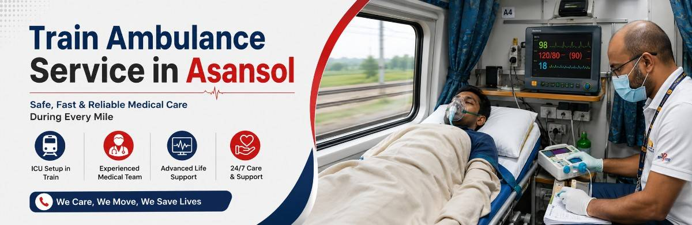

When a doctor in Asansol says a patient needs specialised treatment in another city, the next question is almost always the same: how do we get them there safely? A road ambulance can't cover 1,500 kilometres without exhausting the patient. A flight isn't always available, affordable, or even medically necessary. This is the gap a Train Ambulance Service in Asansol is built to close — a way to move a critically ill patient across the country without asking their body to survive the journey unsupervised.
Save Life Wellness runs this service out of Asansol for exactly that reason. Instead of treating rail travel as a fallback option, we treat it as a genuine medical transfer: a reserved coupé, an ICU-equivalent setup on board, and a trained medical team whose only job for the next several hours is that one patient. Families don't have to choose between "what we can afford" and "what's safe" — from pickup at home in Asansol to admission at the destination hospital, someone qualified is watching over the patient at every stage.
A Train Ambulance Service in Asansol is a reserved train coupé converted into a mobile ICU, staffed with a trained medical escort, for patients who need to travel long distances for treatment. Save Life Wellness arranges this service for patients from Asansol who are too critical, fragile, or high-risk to travel by regular means but do not need — or cannot afford — an air ambulance. From the moment a patient leaves home to the moment they're admitted at the destination hospital, our medical team stays with them, monitoring vitals and managing care throughout the journey.
A Train Ambulance in Asansol is recommended when a patient's condition calls for continuous medical supervision during travel. This includes:
Our ICU Train Ambulance Service in Asansol converts a reserved train coupé into a fully functioning intensive care unit for the duration of the journey. Depending on the patient's medical assessment, the onboard setup includes:
Every setup is customised after our medical coordination team reviews the patient's condition, so the equipment on board matches what the patient actually needs — not a generic package.
For patients who cannot travel safely without respiratory support, our Ventilator Train Ambulance Service in Asansol provides trained ICU staff who manage the ventilator throughout the journey. Our accompanying medical team includes doctors and paramedics experienced in critical care transport, who continuously monitor oxygen levels, airway status, and vitals, and are equipped to respond immediately if the patient's condition changes mid-journey. This level of supervision is what separates a genuine medical transfer from a normal train journey with a caretaker.
Booking a train ambulance can feel overwhelming for a family already under stress, so we keep the process simple and predictable:
This bed-to-bed model means the family doesn't have to manage logistics at any stage — our Train Ambulance Service in Asansol team coordinates every handover.
Medical emergencies don't wait for business hours, and neither do we. Our 24/7 Train Ambulance Services in Asansol are available for booking at any hour, with a coordination team that works to arrange train reservations, medical staff, and equipment on short notice. Call +91-9031200544 any time, day or night, to speak with our team directly.
Save Life Wellness regularly arranges Asansol Train Ambulance transfers to major treatment hubs across India:
| Destination | Approx. Journey Time | Common Use Case |
|---|---|---|
| Asansol → Mumbai | 26–30 hours | Advanced oncology and transplant centres |
| Asansol → Vellore | 24–28 hours | CMC Vellore referrals |
| Asansol → Bangalore | 30–34 hours | Multi-specialty and cardiac institutes |
Journey times vary by train availability and route; our team confirms exact timing at the time of booking.
Our Train Ambulance Asansol service isn't limited to the city centre. We arrange pickups and transfers across the wider Asansol region, including:
If your location isn't listed here, call us — we cover the surrounding areas on request.
Families searching for the Best Train Ambulance Service in Asansol consistently look for the same things: reliability, medical competence, and honest communication. Here's what sets us apart:
Not every transfer needs a train ambulance. Here's how the three options compare:
| Factor | Train Ambulance | Road Ambulance | Air Ambulance |
|---|---|---|---|
| Best for distance | 300 km+ | Under 300 km | Any distance, especially 1,000 km+ |
| Cost | Moderate | Lowest | Highest |
| Comfort for long journeys | High — space to move, rest | Low over long distances | High, but very short duration |
| Suitable for ventilator patients | Yes, with ICU setup | Yes, for shorter distances | Yes |
| Family can accompany | Yes | Yes | Limited by aircraft space |
If your journey is under a few hours by road, a road ambulance is usually sufficient and more economical. For longer distances where flying isn't an option or isn't necessary, a train ambulance offers a stable middle ground between cost and medical safety.
Every patient's situation is different, so we don't quote a flat price — but the main factors that affect cost are:
Call +91-9031200544 for a clear, honest cost estimate based on your specific case.
It includes a reserved train coupé fitted with ICU equipment — oxygen, monitors, and (where needed) a ventilator — along with a trained medical escort who stays with the patient for the full journey, plus road ambulance pickup and drop at both ends.
Cost depends on the distance to your destination, whether a full ICU or semi-ICU setup is needed, how many medical staff accompany the patient, and the train class reserved. We provide a clear estimate before booking.
Yes. Depending on the patient's condition, we assign a doctor, nurse, or paramedic — or a combination — to accompany the patient continuously from pickup to hospital admission at the destination.
We can often arrange transfers within a few hours for urgent cases, though earlier booking gives us more flexibility on train and coupé availability. Call us as soon as a transfer is being considered.
Our onboard medical team is trained to respond immediately to any change in condition, using the equipment provided on the coupé, and stays in contact with both the referring and receiving hospitals throughout the journey.
A train ambulance is generally more affordable and allows more space and time for stable, medically-supervised long-distance travel. An air ambulance is faster and better suited to extremely time-critical cases or very long distances where hours matter.
Alongside Asansol city, we regularly serve Kulti, Burnpur, Raniganj, and the wider Durgapur–Asansol belt. Call us if you're outside this area — we can often still arrange coverage.
Save Life Wellness is available 24×7 for train ambulance bookings in Asansol and the surrounding region.